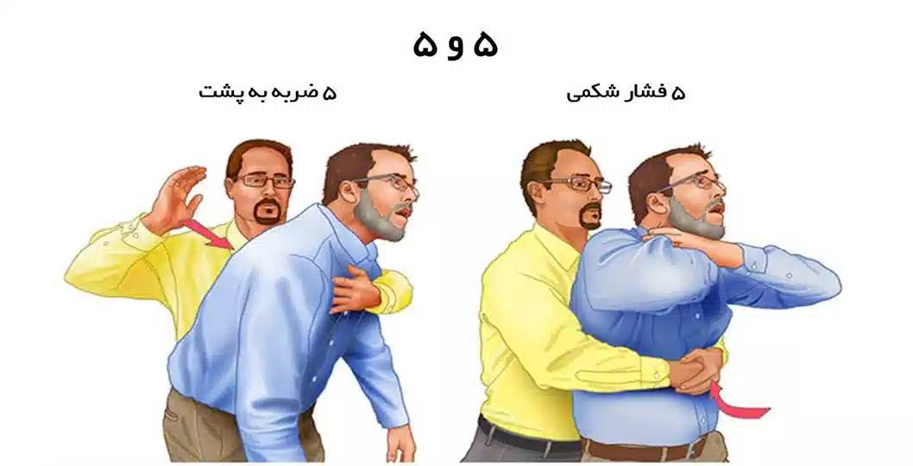
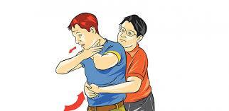

گاهی به علت وجود جسم خارجی در گلو حالت خفگی و انسداد راه هوایی پیدا میشود.حتی بعضی اوقات جسم خارجی نظیر لقمه غدا به جای اینکه در مجرای گوارش برود به مجرای هوایی میرود. بند امدن تنفس میتواند به علت انقباض عضلات گلو هم باشد،در برگسالان ممکن است در اثر نجویدن کامل غذا یا عجله قورت دادن لقمه دچار بند امدن تنفس شود. گاهی در اثر صحبت کردن هم این حالت پیش می اید. شایع ترین جسم خارجی در بزرگسالان لقمه غذا میباشد، ولی در کودکان اجسام خارجی مختلف میتوانند در گیر کنند.اجسام خارجی ممکن است باعث انسداد شدید یا نسبی در راه های هوایی شود.
در خفگی، زمان واکنش بسیار کوتاه است و از بدترین موارد کشنده است. به همین دلایل، جلوگیری از آن راحت است،بنابراین حتی اتفاق نمیافتد. خفگی معمولاً هنگام بلعیدن با دهان بیش از حد پر که به خوبی غذا جویده نشدهاست اتفاق میافتد. این خطر هنگامی از بین میرود که فرد بتواند مواد غذایی را به قطعات متوسط تقسیم کند و آنها را بجوید و بلافاصله ببلعد. اگر غذایی قابل جویدن است، باید جویده شود، هرچه باشد، حتی اگر بسیار نرم یا ژلاتینی باشد، مانند دسرهای نرم، برخی موارد نیاز به جویدن با کنترل بیشتر از حد طبیعی دارد و از مقادیری که وارد دهان میشود بیشتر نیست. داشتن مقداری مایعات برای نوشیدن برای کمک به پایان بلع مفید است (قبل از وقوع خفگی). برای خوب بلعیدن، توصیه میشود که گردن در یک وضعیت طبیعی ، مستقیم برای بدن فرد خورنده، با سر به جلو نگاه داشته شود، نشسته یا ایستاده (و نه دراز کشیده یا خیلی به عقب).
غذاهایی که پیچیدهترین خفگی را ایجاد میکنند، آنهایی هستند که شکل آنها با شکل حلق سازگار است: هات داگ و سوسیس، موز. خفه شدن در غذاهایی که دهان را خشک میکنند راحت تر است (گوشت بیش از حد پخته شده،کیک اسفنجی، پیتزای سرد و غیره)، که به کمک مایعات آشامیدنی یا همراه با پوره یا سس نیاز دارد. همچنین خفه کردن غذاهایی که سخت هستند (گوشت هشت پا یا ماهی، حیوانات بزرگ، برخی از خزندگان و غیره) راحت تر است، ممکن است لازم باشد آنها را همراه با چیزی بخورید که به دندانها کمک میکند تا آنها را خرد کند(مثل یک قرص نان)، یا هر روش مشخصی برای تهیه یا پخت که مانع از بروز خفگی شود.
قادر به صحبت یا تنفس نیستو به گلویش فشار میاورد سرخ شدن صورت و گردن همراه با برجسته شدن سیاهرگ ها و کبودی لب و دهان. گاهی اوقات فرد هوشیاری خود را از دست میدهد.
برخی از گروههای جمعیتی خطر خفگی بیشتری دارند، مانند: افراد مسن، کودکان، معلولان (از نظر جسمی یا روحی)، افراد تحت تأثیر الکل یا مواد مخدر ، افرادی که داروهایی مصرف کردهاند که بهطور جدی توانایی بزاق دهان یا واکنش را کاهش میدهد، بیماران با مشکلات بلع ، افراد دارای سابقه خودکشی، صرع، افراد مبتلا به اختلالات مانند پیکا که آنها را به سمت مصرف اجسام غیرقابل خوردن و غیره سوق میدهد. در مواردی که فرد قادر به خوردن غذا با خیال راحت نیست یا افرادی که غذا را با سرنگ در دهانشان میریزند.
به علایم مصدوم توجه کنید :
در صورت وجود هر یک از این علایم باید قبل از بی هوشی کامل مصدوم در خارج کردن جسم خارجی اقدامات لازم انجام شود.
این روش فشار راه هوایی را بالا میبرد و به خارج کردن جسم خاری کمک میکند.در این تکنین پشت مصدوم بایستید و با یک دست از ناحیه سینه او را نگه دارید ، در صورت امکان سر مصدوم را به جلو خم کنید تا سرش پایینتر ازسینه قرار گیرد.با این کار از نیروی جاذبه هم کمک مگیریم . با دست دیگر 4 ضربه محکم به بین دو کتف بزنید.هر ضربه به تنهایی باید انقدر محکم باشد که بتواند لقمه را به خارج پرتاب کند.دهان مصد.وم را نگاه کنید و ببینید ایا لقمه بیرون اده است یا خیر؟ اگر نبود به مرحله بعد بروید.
اگر خفگی ادامه داشت، با خدمات فوریتهای پزشکی تماس بگیرید.